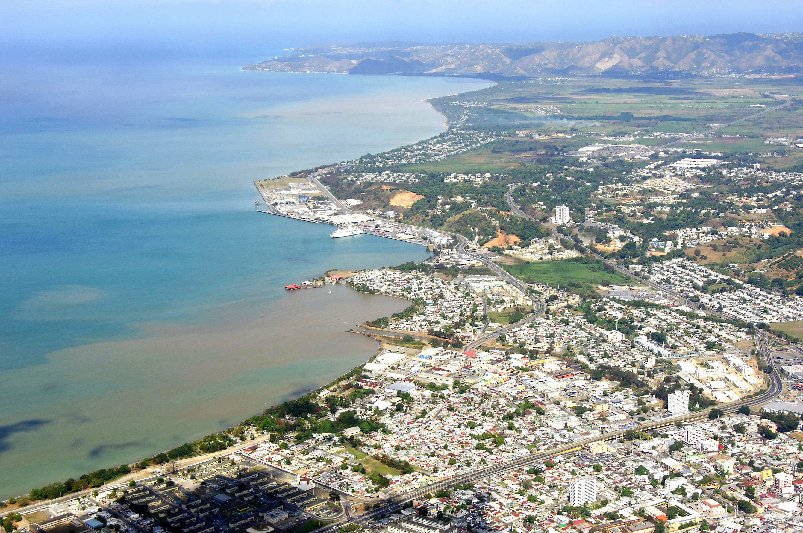
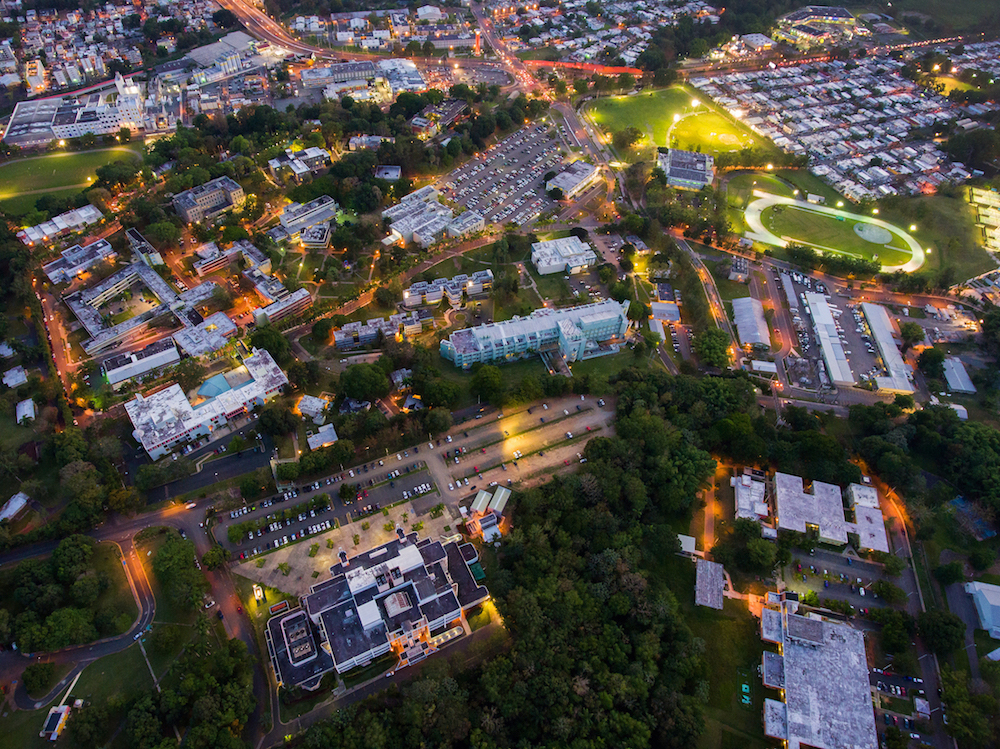

I grew up in the northern part of Puerto Rico for 18 years, and then moved to the beautiful west coast of the island to complete my B.S. at the University of Puerto Rico at Mayagüez.


Outside of academia, I enjoy watching baseball, basketball, and playing FIFA with my older brother (we have been playing since FIFA 10). As of recent, I have picked-up bouldering (currently at levels V4-V5) and a bit of calisthenics. I am an avid coffee drinker, and I am learning (and failing XD) to practice latte art.